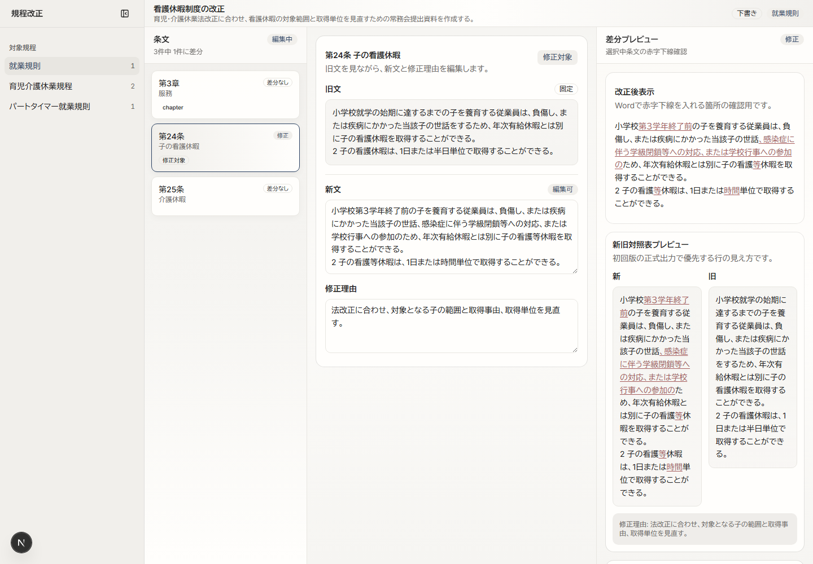

メンバー報告用
規程改正ワークスペース
社内規程の改正を1画面で行うツールです。
ツール画面のキャプチャ

4ペインで進める操作と役割
1
Pane 1: 対象規程を選ぶ
改正案件に含まれる複数の規程を並べ、今回直す規程を選びます。進捗と差分件数もここで把握します。
2
Pane 2: 条文を選ぶ
選択中規程の条文を一覧化し、編集したい条文を選びます。「修正対象」と「差分あり」も分けて見せます。
3
Pane 3: 新文を編集する
旧文を固定表示し、新文と修正理由だけを編集します。規程改正作業の中心になる場所です。
4
Pane 4: 差分を見る
選択中条文の赤字下線差分と、新旧対照表の見え方を確認します。
ツールで解決できる課題
大量の規程改正を管理する
大量の規程を修正する際に、修正対象規程ごとの修正内容、修正の進捗状況、修正理由を管理します。複数人で手分けして作業する場合も、どの規程を誰がどこまで直しているかを確認しやすくします。
1回の修正から2つのWord表を作る
社内独自ルールに沿って、機関会議資料としてWord形式の改正規程全文と新旧対照表の2表を作る必要があります。この2表を何度も手修正するのは大変面倒なため、Word作成前に1回の修正で2表作成を補助します。
工夫したポイント
グリルミーで要件を細部まで確認した
最初から大きな機能を作り込むのではなく、グリルミーで質問を重ねながら、初回実装で本当に必要な範囲を確認しました。その結果、対象規程を選ぶ、条文を選ぶ、新文を編集する、差分を見る、という4つに初回範囲を絞りました。
4ペインの責務を先に決めた
Pane 1は規程、Pane 2は条文、Pane 3は編集、Pane 4は差分確認という役割を先に固定したことで、画面上で何をどこに置くか迷いにくくしました。
苦戦したポイント
Word自動読み込みは初回から入れない判断
規程Wordは表、インデント、別表、様式の揺れが大きく、正確な解析は難易度が高いため後回しにしました。
実現可能な範囲の見極め
将来的には、影響規程の洗い出しや修正の自動化を目指しています。ただ、現実的に実現可能な範囲にとどめたとき、どこまで作業を簡略化できるかの見極めが困難でした。